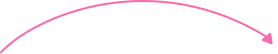

Вы станете мамой!
Запишитесь на бесплатную консультацию
репродуктолога и
получите скидку 10% на процедуры
получите скидку 10% на процедуры

ЭКО с донорским материалом имеет довольно высокую результативность.
Около 46-47% женщин беременеют и
вынашивают здорового ребенка.
вынашивают здорового ребенка.
Метод экстракорпорального оплодотворения (ЭКО) – один из самых эффективных в борьбе с бесплодием. Ему поддаются практически любые формы женского и мужского бесплодия. Современные вспомогательные репродуктивные технологии способны предложить курс лечения бесплодия даже в таких случаях, когда, казалось бы, продолжение рода невозможно. Средняя частота наступления беременности после ЭКО в нашей клинике составляет около 40%, однако вероятность конкретной супружеской пары получить беременность и родить после ЭКО может колебаться от 5 до 75% в зависимости от многих факторов.
9 шагов на пути к мечте!

1
Консультация
репродуктолога
2
Предварительное
обследование
3
Стимуляция суперовуляции
4
Пункция фолликулов
5
Оплодотворение ооцитов и
культивирование эмбрионов
6
Перенос эмбрионов в полость матки
7
Контроль ХГЧ
(тест на беременность)
8
Ведение беременности